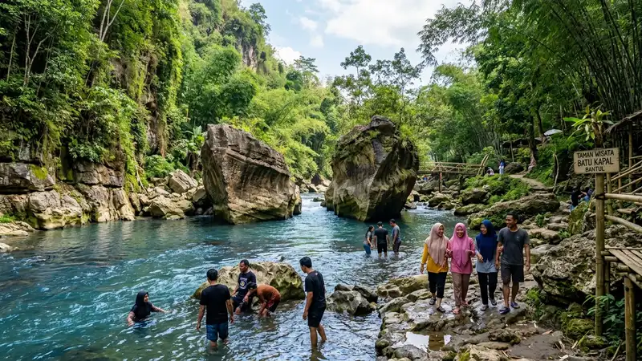

- Berlokasi di Dusun Klenggotan, Srimulyo, Piyungan, Bantul, sekitar 13 kilometer dari pusat Kota Yogyakarta
- Nama "Batu Kapal" diambil dari dua bongkahan batu besar dengan guratan alami yang menyerupai bentuk lambung kapal
- Sempat viral secara nasional setelah menjadi salah satu lokasi syuting film KKN di Desa Penari pada Januari 2020
- Buka setiap hari pukul 07.30-17.30 WIB dengan tiket masuk yang bersifat sukarela
- Waktu terbaik berkunjung adalah musim hujan, sekitar November hingga Februari, saat air sungai tampak lebih biru dan jernih
Apa Itu Taman Wisata Batu Kapal?
Taman Wisata Batu Kapal adalah kawasan wisata alam berbasis sungai yang dikelola oleh warga sekitar di Dusun Klenggotan, Kalurahan Srimulyo, Kapanewon Piyungan, Kabupaten Bantul, Daerah Istimewa Yogyakarta. Objek wisata ini berdiri di atas hutan rakyat yang sebelumnya didominasi rumpun bambu dan sering dijadikan lokasi pengambilan pasir sungai oleh warga setempat.
Daya tarik utama kawasan ini adalah aliran Sungai Opak yang berwarna biru jernih saat cuaca cerah, diapit oleh tebing-tebing batu sedimen purba yang terbentuk melalui proses geologi selama ribuan tahun. Di tengah aliran sungai itulah berdiri dua bongkahan batu besar dengan tekstur ukiran alami menyerupai lambung dan haluan kapal, yang kemudian menjadi asal-usul nama Batu Kapal.
Sebagai kawasan wisata yang tumbuh dari inisiatif warga, Taman Wisata Batu Kapal mulai dibuka dan dibersihkan sekitar pertengahan tahun 2020, setelah sebelumnya lebih dikenal sebagai tempat singgah para pesepeda yang melintasi jalur pedesaan di Piyungan. Foto-foto bebatuan unik yang diunggah para pesepeda inilah yang mula-mula memicu popularitas tempat ini di media sosial.
Di Mana Lokasi dan Bagaimana Rute Menuju Taman Wisata Batu Kapal?
Taman Wisata Batu Kapal berada di Dusun Klenggotan, Srimulyo, Piyungan, Bantul, sekitar satu kilometer di sebelah utara Jalan Jogja-Wonosari, dan dapat ditempuh sekitar 13 kilometer dari pusat Kota Yogyakarta.
Rute yang umum digunakan wisatawan dari pusat kota adalah mengarah ke selatan melalui Jalan Sosrokusuman, lalu berbelok ke arah timur hingga simpang empat Jalan Gedongkuning. Perjalanan dilanjutkan menyusuri Jalan Jogja-Wonosari melewati kawasan wisata Kids Fun, kemudian mengambil arah timur setelah melintasi jembatan Kali Opak dan Pasar Wage. Dari simpang tiga BUKP Kecamatan Piyungan, wisatawan berbelok ke kiri menuju utara dan masuk melalui gapura bertuliskan "Klenggotan", lalu mengikuti papan penunjuk arah menuju lokasi Batu Kapal.
Akses jalan menuju lokasi umumnya berupa jalan kampung yang cukup dilalui sepeda motor maupun mobil kecil, sehingga disarankan bagi wisatawan yang membawa kendaraan besar untuk menyesuaikan rute dan bertanya kepada warga setempat bila diperlukan.
Apa Saja Daya Tarik Utama Taman Wisata Batu Kapal?
Daya tarik utama Taman Wisata Batu Kapal terletak pada kombinasi antara formasi batu raksasa, aliran sungai biru jernih, dan suasana hutan rakyat yang masih asri dan jauh dari hiruk-pikuk perkotaan.
- Formasi Batu Kapal. Dua bongkahan batu besar dengan guratan alami menyerupai kapal menjadi ikon utama sekaligus latar belakang nama kawasan ini.
- Sungai Opak berwarna biru jernih. Pada musim tertentu, air Sungai Opak yang mengalir di antara tebing-tebing batu tampak berwarna biru kehijauan yang kontras dengan bebatuan di sekitarnya.
- Tebing batu sedimen purba. Formasi tebing yang mengapit sungai memberi kesan dramatis dan menjadi latar foto yang banyak dicari wisatawan.
- Jejak lokasi syuting film. Nuansa hutan lebat berpadu sungai dan bebatuan besar di kawasan ini pernah digunakan sebagai latar pengambilan gambar film horor nasional KKN di Desa Penari pada Januari 2020, yang turut mendongkrak popularitasnya.
- Jembatan gantung. Jembatan yang membentang di atas sungai menjadi salah satu titik favorit wisatawan untuk berfoto sekaligus menikmati pemandangan dari ketinggian.
Pembahasan lebih mendalam mengenai ragam titik foto di kawasan ini dapat dibaca pada artikel Spot Foto Batu Kapal, sementara gambaran umum suasana dan aktivitas wisata dibahas lebih lengkap pada artikel Wisata Batu Kapal.
Berapa Harga Tiket Masuk Taman Wisata Batu Kapal?
Taman Wisata Batu Kapal belum menerapkan tarif tiket masuk resmi. Pengunjung umumnya diminta memberikan kontribusi sukarela sebagai bentuk dukungan terhadap pengelolaan dan pengembangan kawasan wisata yang dikelola secara swadaya oleh warga setempat.
Meski tiket masuk bersifat sukarela, biaya tambahan dapat dikenakan untuk kebutuhan tertentu, misalnya sesi foto prewedding di area terbuka yang umumnya memerlukan biaya sewa tempat dan koordinasi dengan pengelola setempat. Biaya semacam ini dapat bervariasi tergantung kebijakan pengelola dan kondisi terkini di lapangan, sehingga sebaiknya dikonfirmasi langsung sebelum kunjungan, terutama untuk keperluan komersial seperti pemotretan.
Biaya parkir kendaraan dan jajanan di warung-warung sekitar lokasi umumnya mengikuti standar wisata desa pada umumnya dan tergolong terjangkau.
Kapan Waktu Terbaik Berkunjung ke Taman Wisata Batu Kapal?
Taman Wisata Batu Kapal buka setiap hari, termasuk hari kerja, mulai pukul 07.30 hingga 17.30 WIB, sehingga wisatawan tidak perlu menunggu akhir pekan untuk berkunjung.
Waktu yang paling direkomendasikan untuk melihat warna air sungai paling biru dan jernih adalah pada musim hujan, sekitar bulan November hingga Februari. Pada periode ini, debit dan kejernihan air umumnya lebih optimal dibandingkan musim kemarau. Kunjungan di pagi hari juga disarankan bagi wisatawan yang ingin mendapatkan pencahayaan alami terbaik untuk berfoto sekaligus menghindari cuaca yang terlalu terik pada siang hari.
Fasilitas Apa Saja yang Tersedia di Lokasi?
Sebagai kawasan wisata desa yang dikelola secara swadaya, fasilitas di Taman Wisata Batu Kapal tergolong sederhana namun cukup memadai untuk kebutuhan dasar wisatawan.
- Warung-warung kecil yang menjual makanan ringan dan minuman
- Toilet umum yang terjaga kebersihannya
- Area parkir kendaraan roda dua dan roda empat
- Jembatan gantung sebagai akses sekaligus spot foto
- Petunjuk arah menuju titik-titik utama kawasan wisata
Karena fasilitas masih bersifat dasar, wisatawan disarankan membawa perlengkapan pribadi seperti alas kaki yang nyaman untuk medan berbatu serta perlengkapan ganti bila berencana bermain air di sungai.
Apa Saja Kesalahan Umum yang Perlu Dihindari Wisatawan?
Beberapa kesalahan umum kerap terjadi karena wisatawan kurang mempersiapkan diri sebelum berkunjung ke kawasan berbatu dan berair seperti Taman Wisata Batu Kapal.
- Mengenakan alas kaki licin yang tidak sesuai untuk medan berbatu dan basah
- Tidak mengecek kondisi cuaca dan debit air sungai sebelum berkunjung, terutama saat musim hujan
- Mengabaikan pengawasan terhadap anak-anak di area bebatuan dan tepi sungai
- Tidak mengonfirmasi kebutuhan khusus seperti sesi foto prewedding kepada pengelola sebelum datang
- Membuang sampah sembarangan di area sungai yang justru merusak kelestarian kawasan
Tips Berkunjung ke Taman Wisata Batu Kapal
Agar kunjungan lebih nyaman dan aman, wisatawan dapat mempertimbangkan beberapa tips berikut.
- Datang pada pagi hari untuk pencahayaan foto terbaik dan suasana yang belum terlalu ramai
- Kenakan alas kaki anti-selip mengingat sebagian medan berupa bebatuan basah
- Bawa pakaian ganti apabila berencana bermain air di Sungai Opak
- Konfirmasi terlebih dahulu ke pengelola bila membawa rombongan besar atau berencana melakukan pemotretan khusus
- Jaga kebersihan dan hindari memanjat bebatuan yang licin demi keselamatan bersama
FAQ
Apa itu Taman Wisata Batu Kapal?
Taman Wisata Batu Kapal adalah destinasi wisata alam di Piyungan, Bantul, yang menampilkan dua bongkahan batu besar berbentuk menyerupai kapal di tepi Sungai Opak.
Di mana lokasi Taman Wisata Batu Kapal?
Lokasinya berada di Dusun Klenggotan, Srimulyo, Piyungan, Bantul, sekitar 13 kilometer dari pusat Kota Yogyakarta.
Berapa harga tiket masuk Taman Wisata Batu Kapal?
Tiket masuk bersifat sukarela karena kawasan ini dikelola secara swadaya oleh warga setempat.
Jam berapa Taman Wisata Batu Kapal buka?
Kawasan ini buka setiap hari mulai pukul 07.30 hingga 17.30 WIB.
Apakah Taman Wisata Batu Kapal cocok untuk keluarga?
Kawasan ini cocok untuk kunjungan keluarga selama pengunjung tetap berhati-hati di area bebatuan dan tepi sungai, terutama saat mengawasi anak-anak.
Arya
Siswa Skariga yang sedang belajar di Gm Academy.